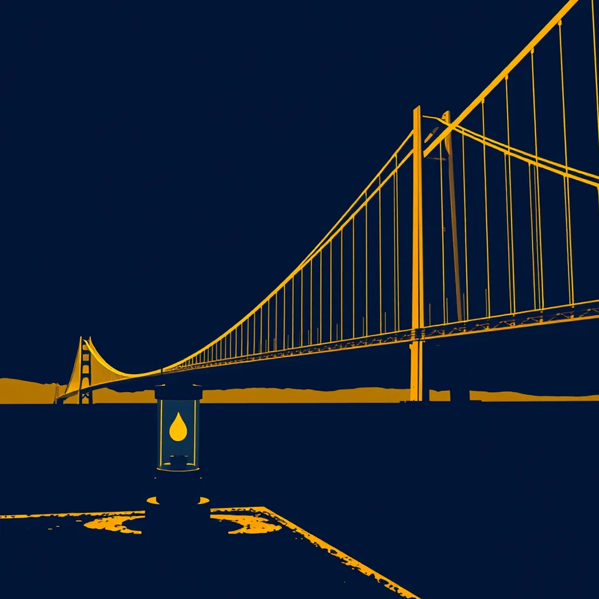

First Light ·
a lantern lighting up on a pier post, the whole bridge lit up, one great arc of gold across the strait
Rain washes slate from the wood of the pier post. A glass lantern clicks open here, spilling a narrow cone on wet concrete. It pushes back the gray edge of dawn. The flame finds its shape, steady and small. Then high above, the suspension cables snap awake, spanning the strait in a single breath of fire. One by one, the towers ignite until the whole arc hangs gold against the morning sky. The light climbs the water, filling every post, every rail, every gap. Back down to the bench where rain droplets slide off the backrest. A single drop falls from the lantern's rim onto a rusted nail below, and that same drop keeps climbing up the warm iron now.
How this piece was made
- 01Poem written byQwen3.5 9B recorded
Local model on one RTX 3070 Ti. It also critiques its own drafts and rewrites up to five times.
- 02Image prompt written byQwen3 8B from pipeline history
Local model. It reads the poem and writes the picture brief.
- 03Image rendered byFLUX.1 [schnell] from pipeline history
Local diffusion model on the same GPU. Several candidates per poem.
- 04Image chosen byClaude Fable 5.1 from pipeline history
Claude, running as the corporation's blind art-critic. It scores every candidate and never writes a prompt.
- Poem drafts
- 5 of 5
- Poem self-score
- 6/10
- Image candidates
- 4
- Judge’s score
- 4/10
- Selection
- Highest-scoring on-subject candidate (did not clear the judge’s bar outright)